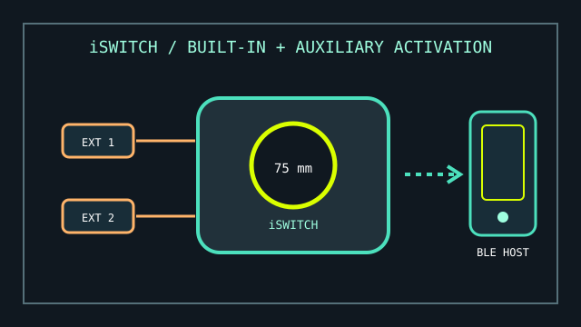

[ BLUETOOTH ACCESS // INTEGRAL + EXTERNAL SWITCHES ]
Pretorian iSwitch
A Bluetooth switch-access device with an integral activation surface and two ports for external switches.

MODEL IDENTIFICATION: Pretorian iSwitch. Distinguish from the APPlicator: iSwitch has an integral switch and two external switch sockets; check the unit label and manual revision.
Model specifications
| Catalog leaf | Adaptive and switch-access controls |
|---|---|
| Exact model / identifier | Pretorian iSwitch wireless switch-access device. |
| Mechanism and primary specifications | Integrated 75 mm switch surface; two 3.5 mm sockets for external switches; configurable switch commands and media/app functions over Bluetooth. |
| Host interface and compatibility | Pairs directly by Bluetooth with a host that supports the documented Bluetooth access profile/functions; Pretorian describes access on iPad, iPhone, Android, and other Bluetooth-capable platforms. The host operating system and app determine which mapped actions are available. |
| Revision identification | Record battery/charging condition, paired host, assigned commands, and the exact host OS and access feature tested. |
Compatibility, setup & limitations
- iSwitch communicates with a Bluetooth host rather than providing a universal wired USB switch output. Confirm the receiving platform supports the needed switch-control or keyboard/media actions.
- The available command set and behavior vary by operating system and target app; a successful Bluetooth pairing alone does not prove that a chosen app accepts switch input.
- External switch inputs are optional and must use appropriate 3.5 mm switch closures. The product does not itself supply user-selected external switches or mounting.
- Pairing, sleep, and battery state affect availability. Test wake/reconnect behavior and planned scanning workflow with the actual user and host.
Preservation and service
Inspect the integral switch surface, external jacks, and charging connection. Save the host name and programmed commands before clearing pairings or restoring settings.
Do not infer platform-specific switch-control support solely from Bluetooth compatibility; verify the required OS accessibility mode separately.
Manufacturer sources
- Pretorian — iSwitch product informationIntegral switch, external sockets, and supported Bluetooth use.
- Pretorian — iSwitch instruction manual (PDF)Manufacturer setup and switch-function reference.